Chapter 4 RIDGE & LASSO
4.1 규제화
선형 모형의 목적은 \(Y = B_o + B_1x_1 + \dots + B_nx_n + e\) 수식에서 RSS를 최소화 하는 것입니다. 규제화란 RSS를 최소화하는 과정에 벌점(\(\lambda\), Shrinkage penalty)을 적용합니다. 간단하게 말하면, 우리가 사용하는 모형에서는 앞으로 \(RSS + \lambda\)를 최소화합니다. 이 중 \(\lambda\)는 조정이 가능한 값이며, 해당 값이 0이면 OLS 모형과 같습니다.
4.1.1 규제화의 종류
규제화에는 일반적으로 두가지 방법이 사용됩니다.
Ridge Regression: Ridge에서 사용하는 정규화 계수항은 가중값의 제곱 합으로, L2-norm 이라고도 부릅니다. 이 모델은 \(RSS + \lambda(\sum b_k^2)\)을 최소화하는 값입니다. 람다 값이 커질수록 계수는 0에 가까워지지만 0이 되지는 않습니다. 이는 예측의 정확성을 높이는 효과가 있지만, 어떠한 피처에 관한 가중값도 0으로 만들지 않기 때문에 모형을 해석하고 소통하는데 문제가 될 수도 있습니다.
LASSO: LASSO는 정규화한 계수항에 L1-norm을 사용합니다. L1-norm은 피처 가중값의 절대값의 합으로, \(RSS + \lambda(\sum |b_k|)\)를 최소화합니다. 이러한 벌점은 어떤 피처의 가중값을 0으로 만들 수도 있으며, 모형의 해석 능력을 크게 향상시킬 수 있습니다.
4.2 전립선암 데이터 분석
암-전립선암 데이터를 통해 규제화 기법을 사용한 차이를 살펴보도록 하겠습니다.
4.2.1 데이터 불러오기 및 편집
library(ElemStatLearn) # 데이터
library(car) # VIF 계싼
library(corrplot)
library(leaps) # 최량 부분 집합 회귀
library(glmnet) # Ridge, Lasso
library(caret)
data("prostate")
str(prostate)## 'data.frame': 97 obs. of 10 variables:
## $ lcavol : num -0.58 -0.994 -0.511 -1.204 0.751 ...
## $ lweight: num 2.77 3.32 2.69 3.28 3.43 ...
## $ age : int 50 58 74 58 62 50 64 58 47 63 ...
## $ lbph : num -1.39 -1.39 -1.39 -1.39 -1.39 ...
## $ svi : int 0 0 0 0 0 0 0 0 0 0 ...
## $ lcp : num -1.39 -1.39 -1.39 -1.39 -1.39 ...
## $ gleason: int 6 6 7 6 6 6 6 6 6 6 ...
## $ pgg45 : int 0 0 20 0 0 0 0 0 0 0 ...
## $ lpsa : num -0.431 -0.163 -0.163 -0.163 0.372 ...
## $ train : logi TRUE TRUE TRUE TRUE TRUE TRUE ...각 피처는 다음과 같습니다.
- lcavol: 암 부피의 로그 값
- lweight: 전립선 무게의 로그 값
- age: 환자의 나이
- lbph: 전립선 비대 크기의 로그 값
- svi: 암 세포가 전립선 바깥에 있는 정낭에 침범했는지를 나타내는 변수, 1 = yes, 0 = no
- lcp: 암 세포가 전립선 표면에서 얼마나 확장했고, 내부로 얼마나 침투했는지를 나타내는 로그 값
- gleason: 암 세포가 얼마나 비정상적으로 보이는지 생체 검사를 통해 병리학자가 2에서 10 사이의 점수를 매긴 값. 이 점수가 높을수록 더 공격적인 암
- pgg45: 글래슨 패턴 4 또는 5 (높은 단계의 암)
- lpsa: PSA의 로그 값
- train: 트레이닝, 테스트셋 데이터 여부
먼저 gleason의 분포를 확인해보도록 하겠습니다.
##
## 6 7 8 9
## 35 56 1 5글리슨 점수가 6, 7점에 대부분 모여 있으며, 8점인 것은 1개, 9점인 것은 5개 밖에 없습니다. 해당 데이터 처리를 위해 다음과 같은 선택이 있습니다.
- 해당 피처를 삭제
- 점수 8과 9만 삭제
- 해당 피처를 바꿔 새로운 변수를 만듬
이를 위해 글리슨 점수와 lpsa의 관계를 그림으로 살펴보도록 합니다.
library(magrittr)
library(ggplot2)
prostate %>%
ggplot(aes(x = gleason, y = lpsa, group = gleason)) +
geom_boxplot() 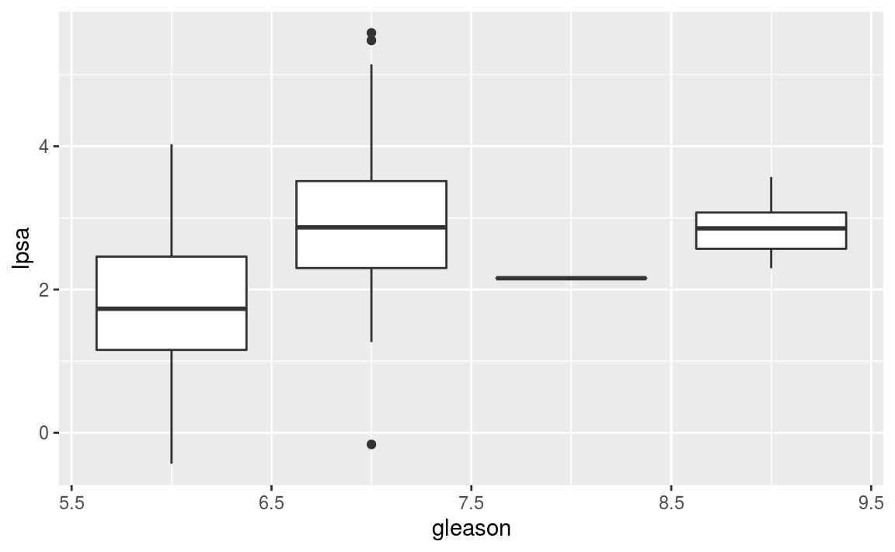
7~9점의 lpsa가 상당히 크므로, 피처를 남겨두는 것이 좋습니다. 따라서 글리슨 점수가 6점 일 때는 0, 7점 이상인 경우에는 1로 바꾸도록 합니다.
##
## 0 1
## 35 62이번에는 각 피처간의 상관관계를 살펴보도록 합니다.
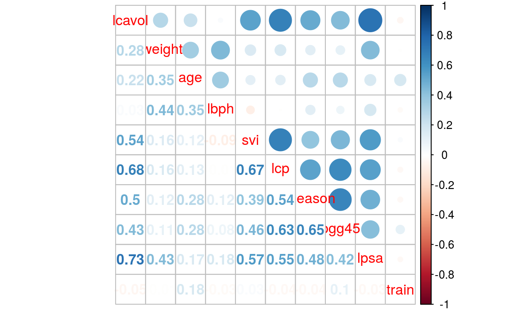
lpsa와 lcavol, lcavol과 lcp, svi와 lcp 사이에는 상관관계가 높아 다중 공선성 문제가 발생할 수 있습니다.
4.2.2 데이터 나누기
다음으로 트레이닝 셋과 테스트 셋을 분리하도록 합니다.
train 열이 TRUE이면 트레이닝 셋, FALSE면 테스트 셋으로 나누어주도록 하며, 마지막 열인 train은 모형에 필요치 않으므로 이를 제외하고 선택해줍니다.
4.2.3 모형화
먼저 최량 부분 집합 회귀를 실시한 후 규제화 기법을 활용하도록 합니다.
4.2.3.1 최량 부분 집합
regsubsets() 함수를 이용해 최량 부분 집합 객체를 만듭니다.
## [1] 3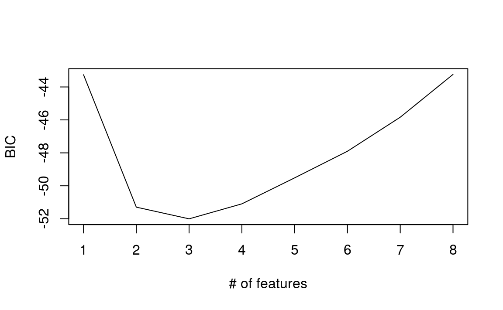
세 가지 피처를 사용한 모형이 가장 낮은 BIC를 보입니다. 도표를 통해 좀 더 자세하게 비교하도록 합니다.
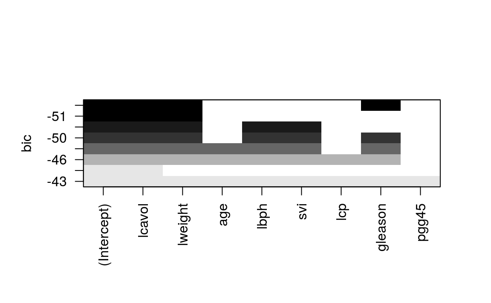
lcavol, lweight, gleason 3개의 결합에서 가장 낮은 BIC를 보입니다. 이제 해당 모형을 통해 OLS 회귀분석을 실시합니다.
ols = lm(lpsa ~ lcavol + lweight + gleason, data = train)
plot(ols$fitted.values, train$lpsa, xlab = 'Predicted', ylab = 'Actual')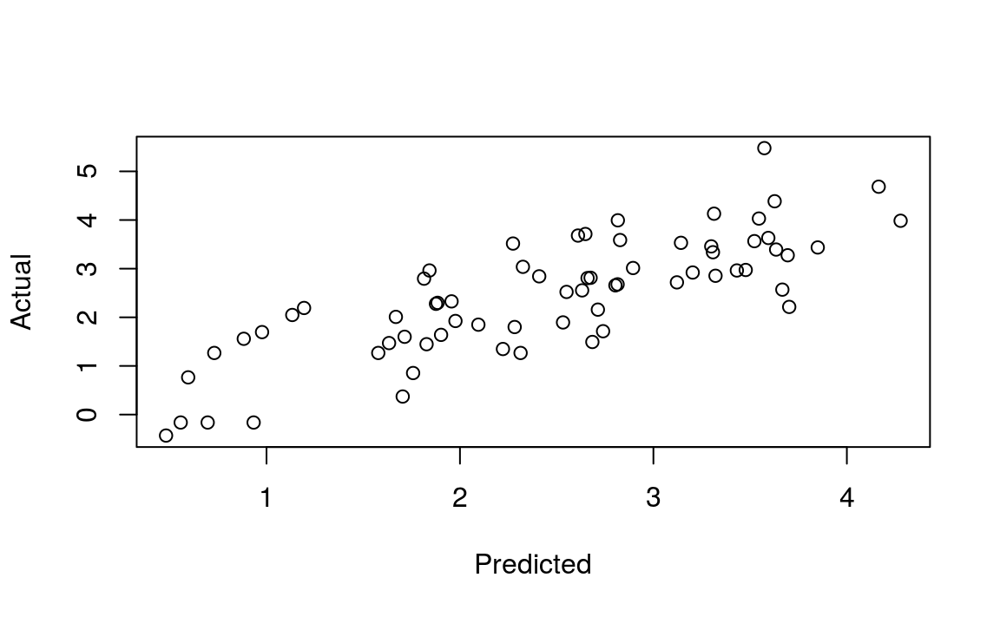
둘 간에는 선형 관계가 보입니다. 이번에는 predict() 함수를 이용해 해당 모형을 테스트 셋에 적용해보도록 합니다.
pred.subfit = predict(ols, newdata = test)
plot(pred.subfit, test$lpsa, xlab = 'Predicted', ylab = 'Actual')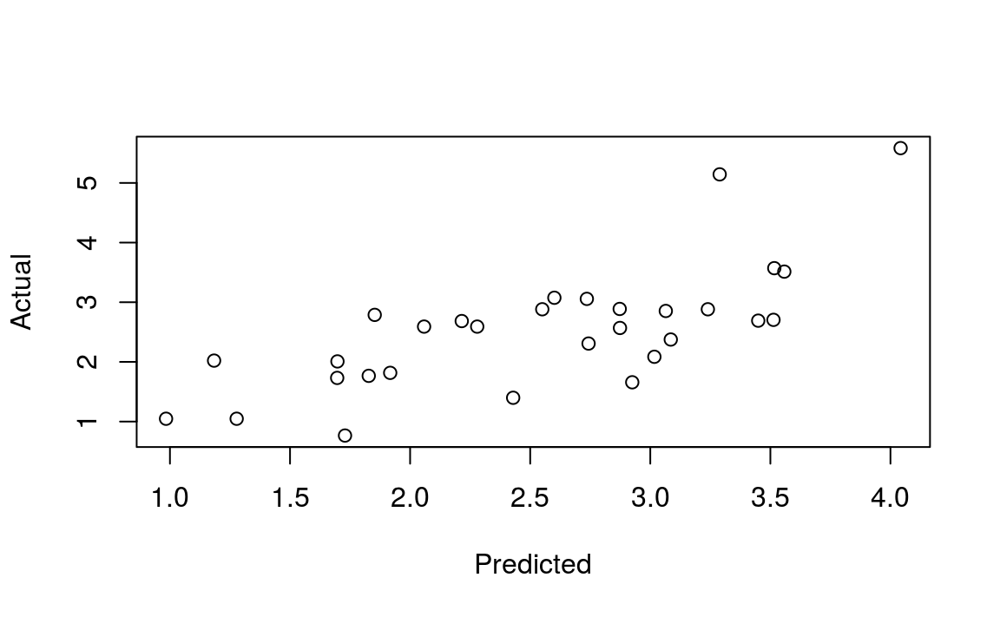
마지막으로 MSE를 계산하도록 합니다.
## [1] 0.5084위의 0.51 값을 기준으로 삼은 후, 규제화 기법과 비교하도록 하겠습니다.
4.2.3.2 Ridge Regression
glmnet() 함수를 이용해 Ridge 회귀분석을 수행할 수 있으며, 해당 함수는 입력 피처가 데이터 프레임이 아닌 행렬의 형태여야 합니다. 다음과 같은 형태로 함수를 입력합니다.
\[glmnet(x = 입력 데이터 행렬, y = 반응값, family = 분포 방법, alpha = 0)\]
이 중 alpha가 0이면 Ridge Regression, 1이면 LASSO 방법으로 분석을 합니다. 먼저 Ridge Regression을 수행합니다.
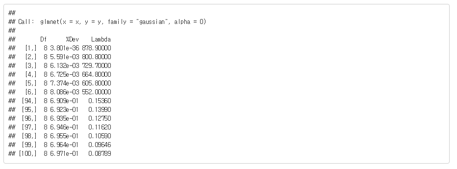
마지막 100번째 결과를 살펴보면 사용하는 피처의 수가 여전히 8개입니다. 편차의 백분율은 0.6971이고, 람다 값은 0.08789 입니다.
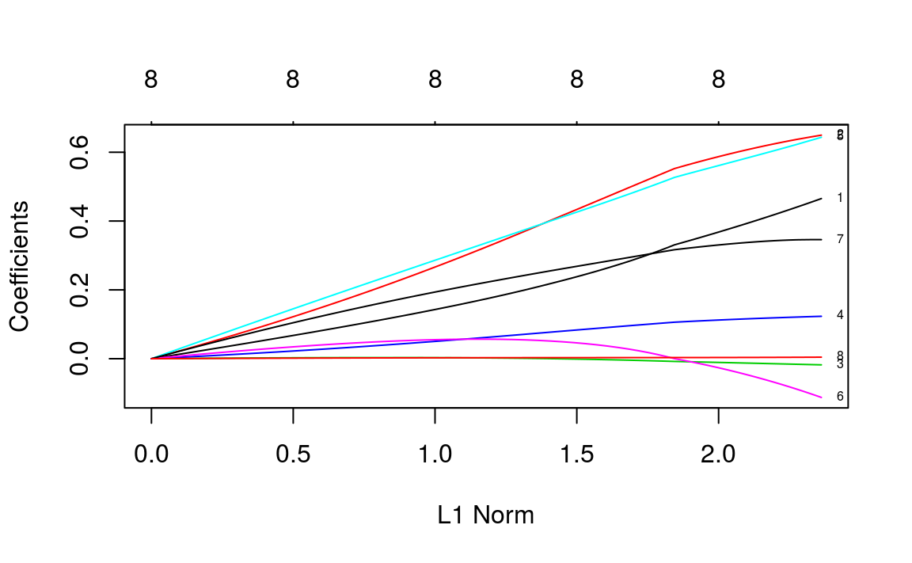
\(y\)축은 계수의 값이고, \(x\)축은 L1-norm 입니다. 이번에는 람다 값이 바뀜에 따라 계수의 값이 어떻게 바뀌는지 살펴보도록 합니다.
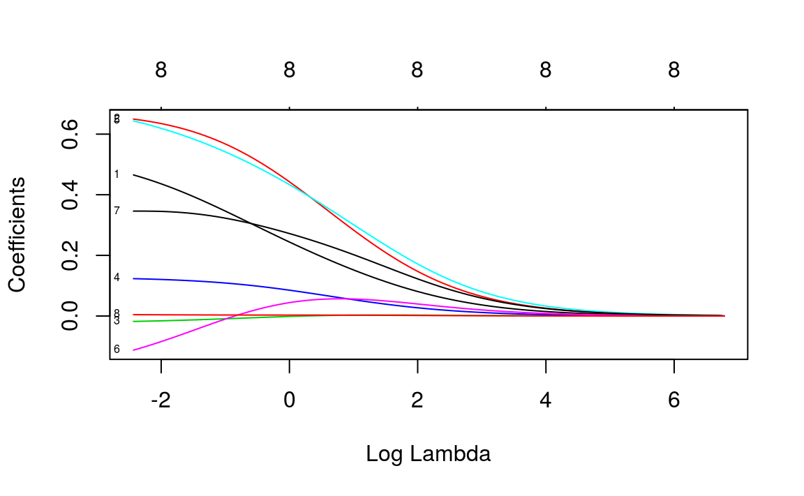
람다 값이 줄어들수록 벌점이 줄어들고 계수의 절대값이 올라갑니다. 해당 모형을 테스트 셋에 적용해 보도록 합니다.
newx = as.matrix(test[, 1:8])
ridge.y = predict(ridge, newx = newx, type = 'response', s = 0.1)
plot(ridge.y, test$lpsa, xlab = 'Predicted', ylab = 'Actual', main = 'Ridge Regression')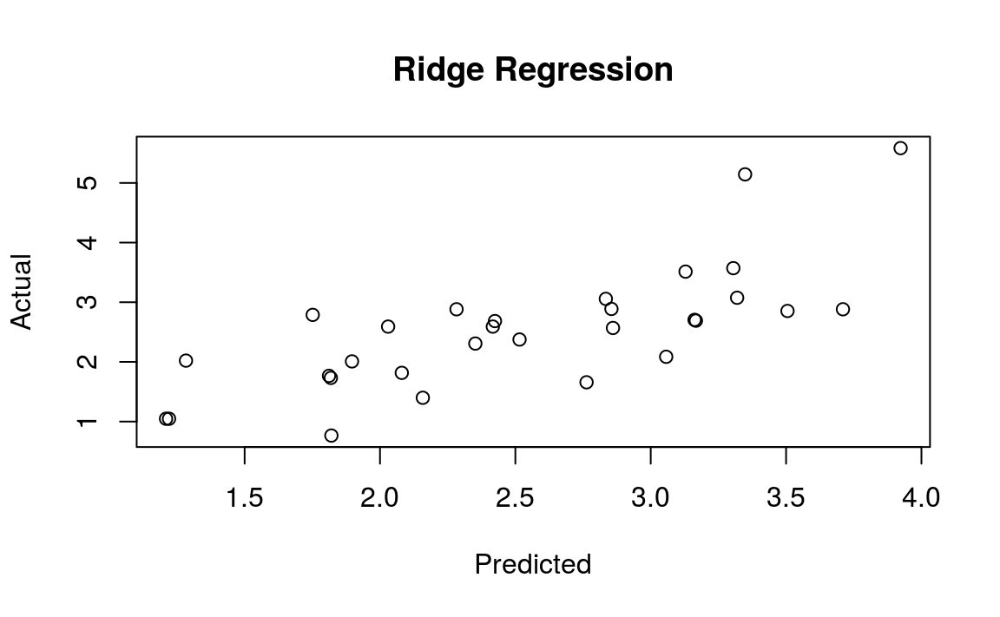
마지막으로 MSE를 계산하도록 합니다.
## [1] 0.4784최량 부분 집합의 MSE 보다 약간 줄어들었습니다.
4.2.3.3 LASSO
glmnet()의 alpha 인자를 1로 변경하면 간단하게 LASSO 분석을 실시할 수 있습니다.
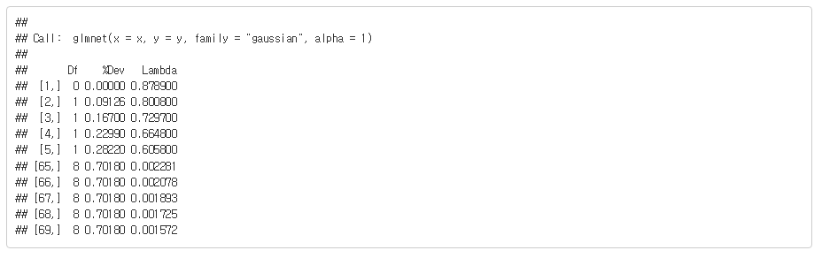
모형의 람다 값이 줄어드는 데도 편차가 더 이상 나아지지 않아 69번째에서 멈추게 됩니다.
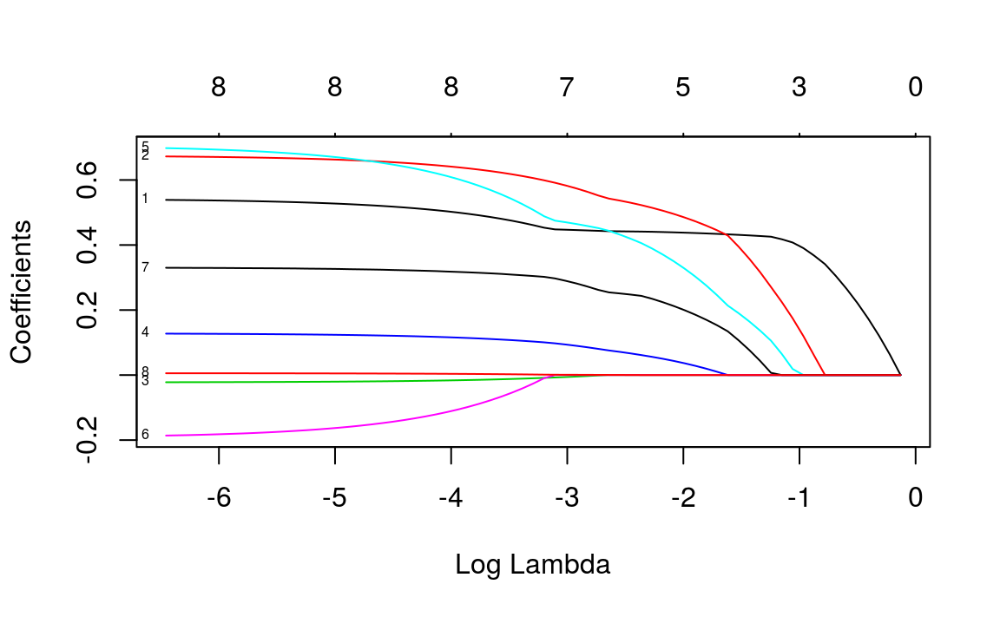
해당 모델을 테스트 셋에 적용하고 MSE를 구하도록 합니다.
lasso.y = predict(lasso, newx = newx, type = 'response', s = 0.045)
plot(lasso.y, test$lpsa, xlab = 'Predicted', ylab = 'Actual', main = 'LASSO')
lasso.resid = lasso.y - test$lpsa
lasso.mse = mean(lasso.resid ^2)
print(lasso.mse)## [1] 0.4437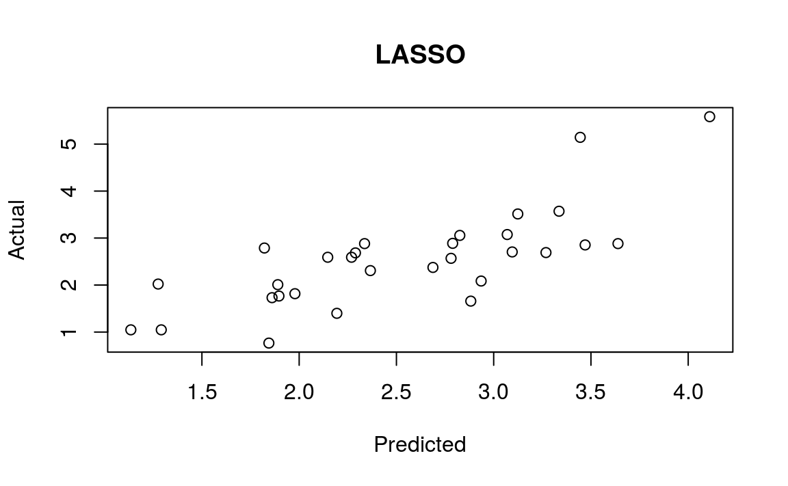
가장 낮은 MSE를 보입니다. 3가지 모형의 MSE를 비교하면 다음과 같습니다.
| 모형 | MSE |
|---|---|
| 최량 부분 집합 | 0.5084 |
| Ridge | 0.4784 |
| LASSO | 0.4437 |